本文是 线程：电路 的一部分，该系列以实验性格式收集受邀的短文和批判性评论，深入探讨神经网络的内部工作机制。
神经网络中自然出现的等变性
曲线电路
引言
视觉模型中的某些神经元是我们并不特别惊讶能发现的特征。例如，对于视觉系统来说是一种相当自然的特征。事实上，它们已经在动物视觉皮层中被发现。我们很容易想象曲线检测器是如何从更早的边缘检测器构建而来的，也很容易猜到曲线检测对神经网络的其他部分可能会有什么用处。曲线检测器
相比之下，高低频检测器则显得更令人意外。它们不是我们先验会预料到的特征。然而，当我们系统性地刻画 InceptionV1 的 时，却在 mixed3a 中发现了整整 ，它们似乎能检测到一侧的高频模式和另一侧的低频模式。InceptionV1早期视觉概览InceptionV1早期视觉概览
这里所说的“高频”和“低频”指的是 空间频率——就像我们对图像进行傅里叶变换时所用的概念一样。
在使用 方法研究神经网络时，我们可能担心的一点是只能理解一小部分高度直观的特征。而高低频检测器表明，我们至少有可能理解一些不太直观的特征。放大观察：电路导论
功能
我们如何确定“高低频检测器”确实是在检测从低空间频率到高空间频率的方向性转变呢？我们将依赖三种方法：
- 特征可视化能让我们在每个神经元与其功能之间建立因果联系。
- 数据集样本向我们展示神经元在实际中会在哪里激活。
- 合成调谐曲线向我们展示各种变化如何影响神经元的响应。
在本文后续部分，我们将深入探讨它们被实现和使用的机制细节。我们将能够理解实现它们的算法，从而确认它们确实能检测高频到低频的转变。
特征可视化
是一种经过优化的合成输入，旨在最大程度地激活某个特定神经元。特征可视化从随机噪声开始构建，因此可视化中每一个偏离随机噪声的像素，都是因为它能让神经元更强烈地激活。这就建立了因果联系！特征可视化所展示的行为，正是能引起该神经元激活的行为：特征可视化

从这些特征可视化中，我们观察到所有这些高低频检测器都具有以下共同特征：
- 检测相邻的高频和低频。检测器对一侧的高频和另一侧的低频做出响应。
- 旋转等变性。这些检测器具有旋转 ：每个单元检测沿特定角度的高低频变化，不同单元共同覆盖了全部 360º 的可能方向。我们在用合成样本构建调谐曲线时，以及在观察实现这些检测器的权重时，将更详细地看到这一点。神经网络中的自然等变性
我们可以在特征可视化中使用 ，在优化单个神经元激活的同时，鼓励一批可视化呈现不同的激活模式。因此，我们有理由相信，如果高低频检测器对其他模式也敏感，我们会在这些可视化中看到迹象。但实际上，频率对比仍是所有这些可视化中不变的特征。（虽然在边界处也形成了其他模式，但这些很可能超出了神经元的有效感受野。）特征可视化
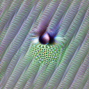
数据集样本
我们通过从自然数据分布（此处为训练集）中采样，并挑选那些能使神经元最大程度激活的图像来生成数据集样本。检查这些样本有助于确保我们没有误读特征可视化。
现实世界中多种情况都能引发高低频检测器的激活。通常是一个纹理丰富、清晰对焦的前景物体与模糊的背景相对——例如，前景可能是麦克风的网罩、蜂鸟细小的头部羽毛，或 Lenovo ThinkPad 指点杆上的小橡胶点——但并非总是如此：我们也观察到它会对 MP3 播放器的拉丝金属表面与其光亮屏幕的对比、或水印文字产生反应。
在所有情况下，我们都能看到一个高频区域和另一个低频区域。虽然它们经常在物体边界处激活，但也能在没有物体边界却存在频率变化的情况下激活。因此，高低频检测器与 并不完全相同。InceptionV1早期视觉概览
合成调谐曲线
调谐曲线能向我们展示神经元的响应如何随某个参数变化。这是神经科学中的标准方法，我们发现它对研究人工神经网络也非常有用。例如，我们曾用它来展示 。类似地，我们也可以用调谐曲线来展示高低频检测器的响应情况。曲线检测器
为了构建这样的曲线，我们需要一组能让高低频检测器激活的合成刺激。我们生成一侧为高频模式、另一侧为低频模式的图像。由于我们对方向感兴趣，因此会旋转这种模式来创建一维刺激族：
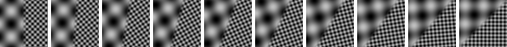
但每侧应该使用什么频率呢？频率差异需要有多陡？为了探索这一点，我们加入第二维度来改变两种频率之间的比率：
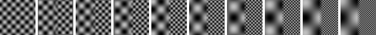
（加入第二维度也有助于我们判断第一维度的结果是否稳健。）
现在我们有了这两个维度，对合成刺激进行采样并绘制每个神经元对它们的响应：
每个高低频检测器都对有限范围的方向表现出明显的偏好。正如我们 曲线检测器的情况一样，高低频检测器也具有旋转 ：每一个选择特定的方向，共同覆盖完整的 360º 空间。曲线检测器神经网络中的自然等变性
实现机制
高低频检测器是如何从更低层的神经元构建而来的？我们可以想象许多不同的电路来实现这种行为。举一个例子，这些单元的方向性至少有两种可能的形成方式。
- 等变→等变假设。第一种可能是前一层已经存在能检测高频到低频定向转变的先导特征。这种假设的极端版本是，高低频检测器只是对某一更低层神经元的恒等传递。更温和的版本类似于我们在曲线检测器中看到的情况，即 被提炼成更大、更复杂的 。另一个例子是边缘检测如何从已经具有方向性的简单 构建而来。我们称之为 ，因为方向等变性在前一层已经存在。
- 不变→等变假设。另一种可能是前层并没有类似高低频检测器的特征，而是通过神经元权重的空间排列来产生方向性，这些权重决定了低频和高频特征在哪些位置会激发它。InceptionV1早期视觉概览InceptionV1早期视觉概览InceptionV1早期视觉概览神经网络中的自然等变性
为了解决这个问题——更一般地说，为了理解这些检测器是如何实现的——我们可以观察权重。
让我们来看一个单独的检测器。观察从 InceptionV1早期视觉概览 到 mixed3a110 的权重，其中大部分可以粗略分为两类：左侧激活右侧抑制的，以及做相反操作的。
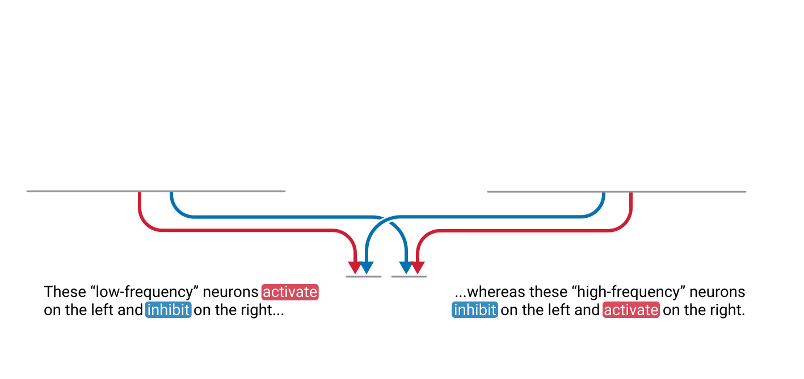
对于其他每个高低频检测器也是如此——当然，权重上的空间模式[1]不同，从而实现了不同的方向。
令人惊讶的是，在所有高低频检测器中，我们为每个检测器得到的两个神经元簇实际上是相同的两个簇！其中一个簇似乎检测一般高频的纹理，另一个簇似乎检测一般低频的纹理。
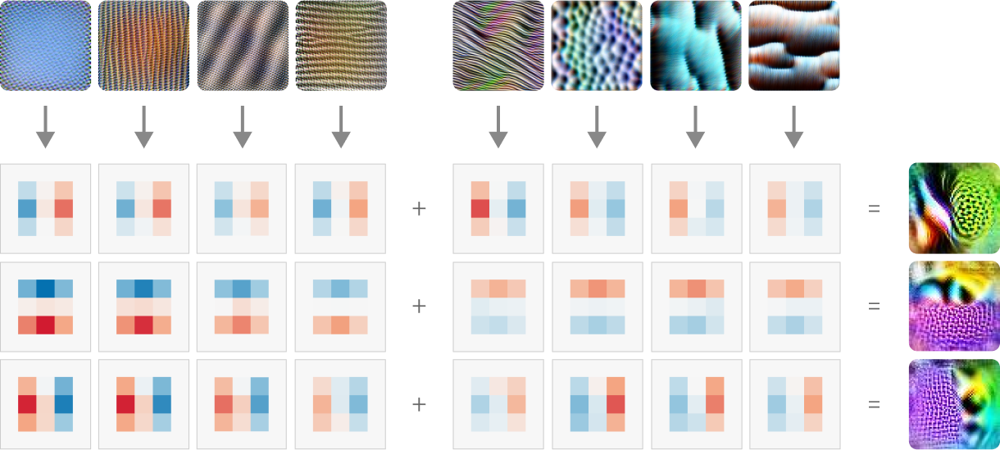
这正是如果不变→等变假设成立时我们预期会看到的结果：每个高低频检测器都以不同的空间排列组合相同的两个组件，而这些排列又决定了检测器的方向。
这两个不同的簇非常引人注目。在下一节中，我们将对它们进行更详细的调查。
高频和低频因子
如果我们能确认这两个神经元簇是真实存在的，那就好了。如果我们还能为后续的电路分析创建一个更简单的表示方式，那就更好了。
对较低层与高低频检测器之间的连接[2]进行因子分解，是检查这两个簇是否有意义并探究其重要性的一种方法。执行单侧非负矩阵分解（NMF）[3]可以将连接分离为两个因子。
每个因子对应一个跨越神经元的向量。特征可视化也可以用来可视化这些神经元的线性组合。令人惊讶的是，其中一个清晰地显示出通用的高频图像，而另一个则显示出低频图像。[4] 我们将它们分别称为 HF 因子和 LF 因子：
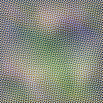
特征可视化虽然具有启发性，但我们如何确定这些因子确实对应于一般的高频和低频，而不是特定的高频或低频模式呢？我们可以再次创建合成刺激，但这次绘制那两个 NMF 因子的响应。
由于我们的因子不对应于边缘，因此每个合成刺激只会有一个频率区域。为了增加第二个维度并再次展示稳健性，我们还改变了该区域的旋转角度。（频率纹理并非完全旋转不变，因为我们是用正交余弦波构建刺激的。）
与之前不同，这些激活现在基本忽略了图像的方向，但对频率敏感。我们可以把所有方向的结果取平均，从而得到一个简单的调谐曲线，显示每个因子如何响应频率。正如预期的那样，HF 因子对高频响应，LF 因子对低频响应。
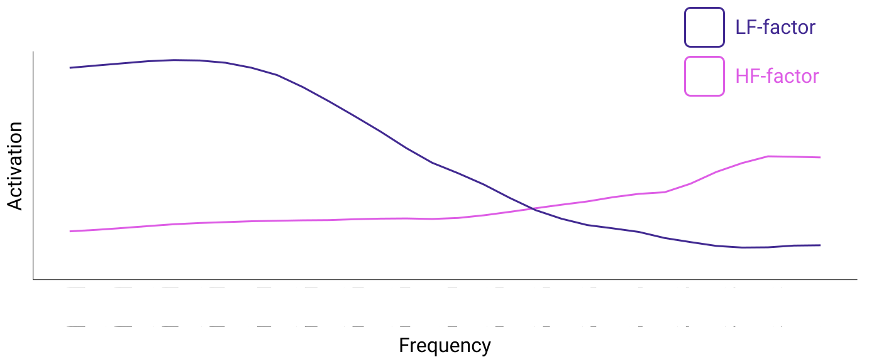
现在我们已经确认了这些因子的含义，接下来看看它们是如何组合成高低频检测器的。
高低频检测器的构建
NMF 将权重分解为通道因子和空间因子。目前我们已经观察了通道因子的两个部分。空间因子显示了如何通过空间加权将 HF 和 LF 因子组合成高低频检测器。
不出所料，这些权重基本重现了我们在图 5 中从两个不同神经元簇看到的相同模式：HF 因子抑制的地方，LF 因子激活——反之亦然。[5]
因此，高低频检测器是由将高频检测安排在一侧、将低频检测安排在另一侧的电路构建而成的。
也存在一些未能被 NMF 分解视角完全捕捉的例外。例如，conv2d2181 是一个纹理对比检测器，似乎已经具有空间结构。这是我们预期会通过等变→等变电路参与的特征类型。然而，如果真是这样，我们会预期它到高低频检测器 mixed3a70 的权重是一条沿中间向下的实心正条纹。但我们实际观察到的是，它作为高频检测的一个组成部分做出贡献，尽管可能带有轻微的整体正偏置。虽然 conv2d2 181 具有空间结构，但它可能对高频模式响应更强烈。
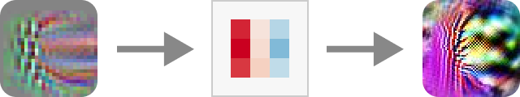
现在我们理解了它们是如何构建的，那么更高层的特征又是如何使用高低频检测器的呢？
使用方式
InceptionV1早期视觉概览 是紧跟在高低频检测器之后的下一层。在这里，高低频检测器对多种特征都有贡献。它们最重要的作用似乎是支持 ，但也对 和 、 和 形状，以及至少各一个 中心-环绕、模式 和 纹理 做出贡献。InceptionV1早期视觉概览InceptionV1早期视觉概览InceptionV1早期视觉概览InceptionV1早期视觉概览InceptionV1早期视觉概览
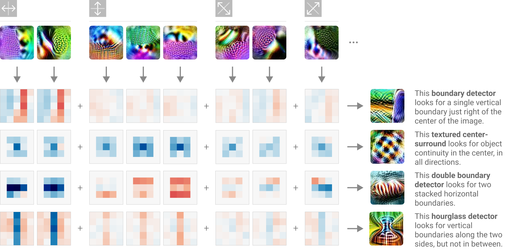
下游特征往往似乎会忽略高低频检测器的“极性”，无论哪一侧是高频，都会以大致相同的方式响应。例如，垂直边界检测器 mixed3b345（见上图）会被检测到沿垂直线任一方向频率变化的高低频检测器强烈激活。
虽然来自高低频检测器的激活有助于检测不同物体之间的边界，但来自高低频检测器的抑制也可以通过检测必须沿某个方向保持连续的区域，为物体检测器增加结构——本质上表示不存在边界。
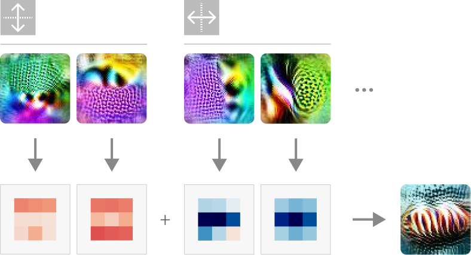
正如我们之前提到的，高低频检测器最主要的下游贡献是给边界检测器。在 mixed3b 中，对所有高低频检测器权重 L2 范数最大的前 20 个神经元中，有 8 个参与了某种形式的边界检测：、，尤其是 。InceptionV1早期视觉概览InceptionV1早期视觉概览InceptionV1早期视觉概览
在物体边界检测中的作用
是检测物体之间边界的神经元，无论是两个物体之间的边界，还是前景到背景的过渡。它们不同于边缘检测器或曲线检测器：虽然它们对边缘敏感（事实上，它们的一些最强权重来自更低层的边缘检测器！），但物体边界检测器也对其他指标敏感，例如颜色对比和高低频检测。InceptionV1早期视觉概览
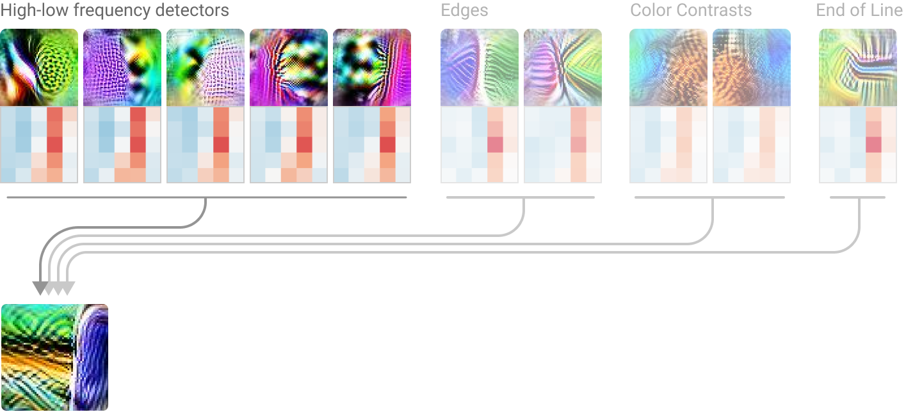
高低频检测器通过提供物体已结束且另一事物开始的一项证据，来对这些物体边界检测器做出贡献。下面展示了一些物体边界检测器的示例，以及它们到一组高低频检测器的权重（按方向分组，忽略极性）。
特别要注意每个分组内的权重是多么相似！这再次表明后续层会忽略高低频检测器的极性。此外，激活和抑制权重的排列有助于形成每个边界检测器的整体形状，遵循上面概述的原则。
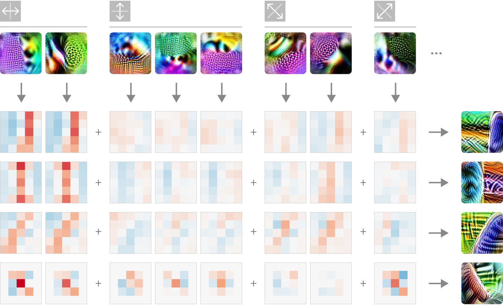
在 mixed3b 之后，高低频检测器最终通过继续贡献于边界和连续性检测，在 mixed4a 及更深层中参与检测更复杂的物体形状。
目前，我们的研究范围仅限于 InceptionV1。那么在一般的卷积神经网络中，高低频检测器有多常见呢？
普遍性
其他网络中的高低频检测器
时刻追问我们看到的是普遍规律还是有趣的例外，这一点很重要——而高低频检测器似乎属于普遍规律。与 InceptionV1 中类似的高低频检测器可以在多种架构中找到。
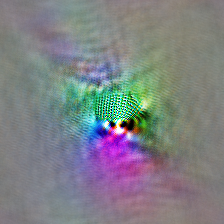
注意，这些检测器在不同网络中的深度非常相似，都在网络深度的 29% 到 33% 之间！[6] 虽然每个网络的高低频检测器所响应的特定方向可能略有不同，但每个网络都拥有自己的一族检测器，共同覆盖完整的 360º，构成一个旋转 的家族。[7]神经网络中的自然等变性
尽管这些家族来自三个完全不同的网络，我们也发现它们的高低频检测器都是由高频和低频组件构建而成的。
其他网络中的 HF 因子和 LF 因子
与对 InceptionV1 的做法一样，我们可以再次对每个网络中高低频检测器的权重进行 NMF，以提取最强的两个因子。
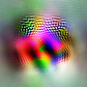
两个因子的特征可视化显示出一个清晰的 HF 因子和一个清晰的 LF 因子，与我们在 InceptionV1 中发现的一致。此外，两个因子上的权重再次非常接近对称。
因此，我们先前的结论在这些不同网络中也成立：高低频检测器是由高频组件和低频组件通过特定的空间排列构建而成的。
结论
虽然高低频检测器是一种我们不一定预料到会在神经网络中出现的特征，但我们发现，仍然可以使用为探索电路而开发的的可解释性工具——NMF、特征可视化、合成刺激等——来探索和理解它们。
我们还了解到，高低频检测器是由可理解的较低层组件构建而成的，并且展示了它们如何贡献于后续的更高层特征。最后，我们看到高低频检测器在多种网络架构中都很常见。
鉴于普遍性观察，我们可能会想，高低频检测器的存在也许并不那么不自然。我们甚至在训练数据大不相同的 AlexNet Places 中也找到了 近似 的高低频检测器。除神经网络外，摄影师早已知道图像中失焦区域的模糊所带来的美学品质被称为 bokeh。而在 VR 中，视觉模糊既可以提供有效的景深提示，反之，如果实现方式不协调，也可能让用户感到恶心。也许频率检测在自然和人工视觉系统中都很常见，是另一种信息线索。
无论它们的存在是否自然，我们都发现高低频检测器是可以被刻画和理解的。
本文是 Circuits 系列的一部分，该系列由一个开放的科学合作项目撰写的一组短文和评论组成，旨在深入探究神经网络的内部工作机制。
神经网络中自然出现的等变性
曲线电路